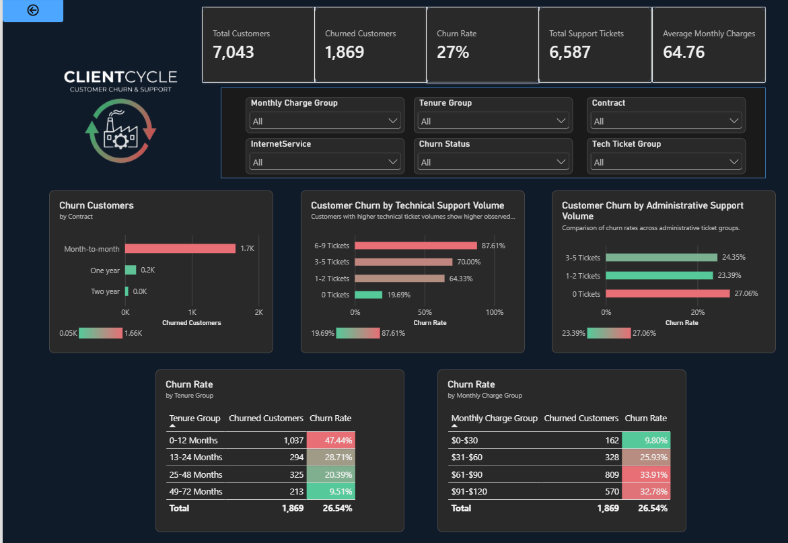

Fiber churn is high
1,297 of 3,096 fiber optic customers churned (41.9%), well above the 26.5% churn rate across all customers.
Power BI / Telecom
A Power BI dashboard analysing why telecom customers churn, with a focus on support ticket volume, contract type and tenure.
View note: the screenshot is filtered to Fiber optic customers.

1,297 of 3,096 fiber optic customers churned (41.9%), well above the 26.5% churn rate across all customers.
Churn is 30.8% with no technical tickets, 81.7% with 1-2 tickets and 93.5% with 6-9 tickets. The biggest jump happens at the first ticket.
Churn is 42.6% with no admin tickets and 37.5% with 3-5 tickets.
Roughly 1.2K of 1.3K.
Churn is 69.9% in the first 12 months, then 48.8% (13-24 months), 36.6% (25-48 months) and 17.1% after 49 months.
Customers in the $61-$90 group churn more (51.9%) than those in the $91-$120 group (33.6%).